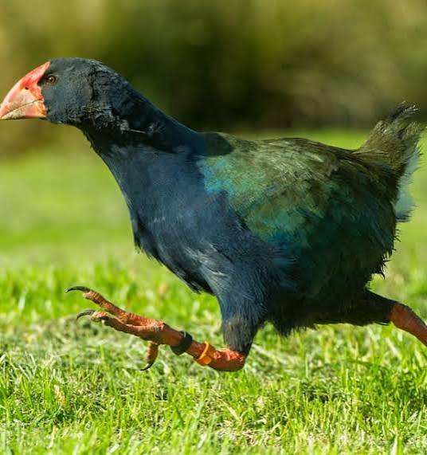
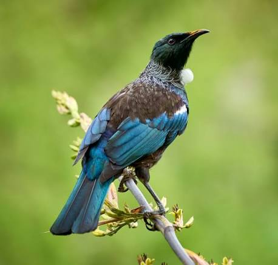
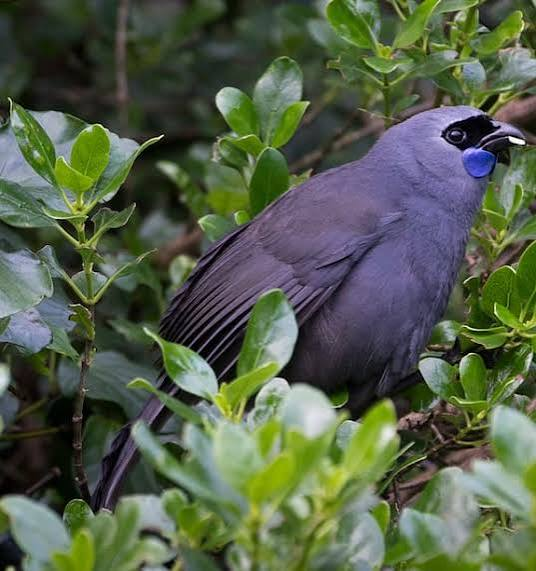
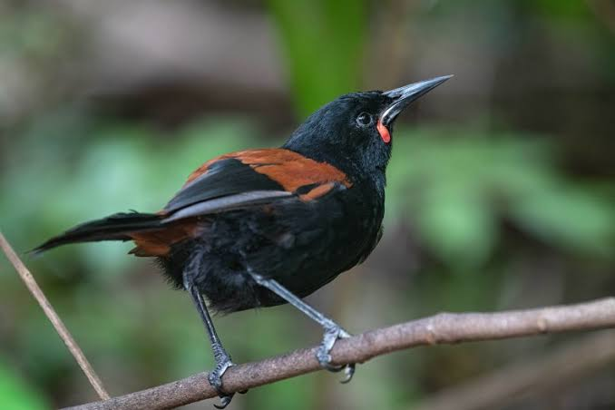
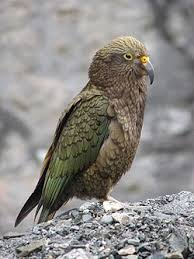
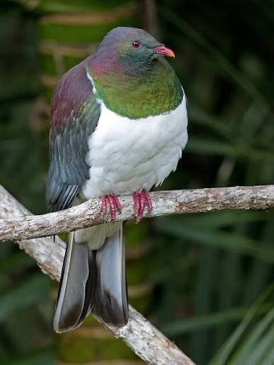
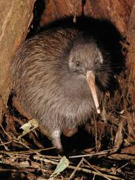
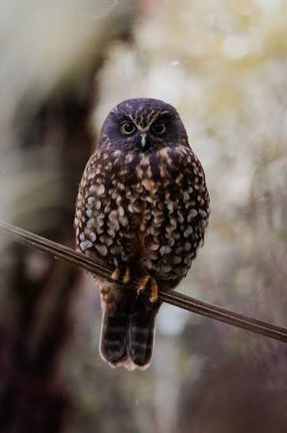

Bird Information
Tiritiri Matangi is home to many native New Zealand birds. These birds are important because they are part of our natural environment and New Zealand's unique wildlife.
Learning how to identify different birds makes it easier to spot them while exploring the island. Knowing how to protect them also helps keep Tiritiri Matangi safe for future generations.
Takahē

The takahē is a large flightless bird native to New Zealand. It has bright blue and green feathers and lives mainly in native grasslands.
The takahē is classified as Nationally Vulnerable. Predation and competition for food are major threats to the species.
How to Spot a Takahē
Look for a large, flightless bird with bright blue and green feathers, a red beak and red legs. Takahē are often found walking through grassy areas while searching for food.
How to Protect Takahē
People can help protect takahē by supporting conservation programmes, respecting protected areas and following visitor rules. Do not feed or disturb them and keep a safe distance when watching them.
Tūī

The tūī is a common and easily recognizable bird found in New Zealand's forests.
Tūī are affected by habitat loss and introduced predators, which is why conservation efforts are crucial.
How to Spot a Tūī
Look for a dark-coloured bird with a white tuft of feathers under its throat. Tūī can often be seen feeding on flowers, nectar and fruit. Their loud and unusual calls can also make them easier to locate.
How to Protect Tūī
Visitors can help by supporting conservation initiatives and following guidelines to minimize their impact on the environment. Protecting native plants also helps provide tūī with food and shelter.
Kōkako

The kōkako is a native New Zealand forest bird known for its blue-grey colouring and unique song.
North Island kōkako are classified as Nationally Increasing. Predation and competition for food are important threats.
How to Spot a Kōkako
Look high in the native forest for a blue-grey bird with a dark face and blue wattles beside its beak. Its distinctive and beautiful song can also help you locate one.
How to Protect Kōkako
Predator control, habitat protection and conservation projects help protect kōkako populations. Visitors can help by staying on marked tracks, keeping quiet and not disturbing the birds.
Tīeke

The tīeke, also known as the saddleback, is a native New Zealand bird and an important part of the country's native wildlife.
Tīeke are affected by introduced predators, which is why predator control and protected habitats are important.
How to Spot a Tīeke
Look for a dark brown or black bird with a noticeable chestnut-coloured band across its back. Tīeke can often be seen moving through native forest while looking for food.
How to Protect Tīeke
Visitors can help by staying on marked tracks, respecting wildlife and following conservation area rules. Predator control and protected habitats are especially important for protecting tīeke.
Kea

The kea is a large, intelligent parrot native to New Zealand. It has olive-green feathers, bright orange feathers under its wings, and a long, curved beak.
The kea is classified as Nationally Endangered. Threats include predators, lead poisoning, and human activity.
How to Spot a Kea
Look for a large green parrot with a long, curved beak and bright orange feathers underneath its wings. Kea are often found in alpine areas, especially around mountains and rocky landscapes.
How to Protect Kea
People can help protect kea by keeping them away from food and rubbish, not feeding them, and respecting their natural habitat. When visiting alpine areas, keep a safe distance and follow conservation rules.
Kererū

The kererū, also known as the wood pigeon, is a native New Zealand bird and an important part of the country's native wildlife.
Kererū are affected by habitat loss and introduced predators, which is why conservation efforts are crucial.
How to Spot a Kererū
Look for a large pigeon with a white chest, a green and purple body and a red bill. Kererū can often be spotted flying between trees or feeding on fruit from native plants.
How to Protect Kererū
Visitors can help by supporting conservation initiatives and following guidelines to minimize their impact on the environment. Protecting native forests and food-producing trees helps provide kererū with places to live and feed.
Kiwi

The kiwi is a flightless bird endemic to New Zealand and is a symbol of the country.
Kiwi are affected by habitat loss and introduced predators, which is why conservation efforts are crucial.
How to Spot a Kiwi
Kiwi are small, brown, flightless birds with a long curved bill. They are mainly active at night and use their long bill to search for insects and other food on the forest floor.
How to Protect Kiwi
Visitors can help by supporting conservation initiatives and following guidelines to minimize their impact on the environment. Never chase, touch or feed a kiwi. Staying on marked tracks and following island rules also helps protect them.
Morepork/Ruru

The morepork, also known as the ruru, is a nocturnal bird found in New Zealand's forests.
Moreporks are affected by habitat loss and introduced predators, which is why conservation efforts are crucial.
How to Spot a Morepork/Ruru
Look for a small brown owl with large eyes. Moreporks are mostly active at night, so listening for their distinctive "more-pork" call can be one of the easiest ways to find them.
How to Protect Morepork/Ruru
Visitors can help by supporting conservation initiatives and following guidelines to minimize their impact on the environment. Protecting native forests and supporting predator control helps keep their habitat safe.
How Can Visitors Help?
Visitors can help by staying on marked tracks, respecting wildlife and following conservation area rules.
Stay on marked tracks and follow island rules.
Do not feed or disturb the wildlife.
Keep the environment clean and take rubbish with you.
Respect plants, birds and other animals.
Support conservation programmes.
Learn about the native wildlife and share your knowledge with others.